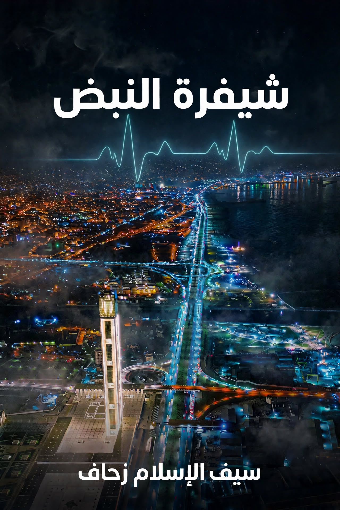

في عالم يسوده الذكاء الاصطناعي والتزييف العميق، تروي "شيفرة النبض" قصة ليلى بن عودة، المهندسة المعمارية التي تجد نفسها ضحية لمؤامرة رقمية تهدد سمعتها وحياتها. تتشابك الأحداث في رحلة بين وهران، تلمسان، باريس والعاصمة، حيث يتكشف خيط مؤامرة عالمية تستهدف تفكيك الوعي الجمعي للجزائريين باستخدام تقنيات الذكاء الاصطناعي التوليدي والحرب السيبرانية. الرواية تستعرض صراعاً وجودياً بين الحقيقة والزيف، بين الإنسانية والآلة.
إشعاع مفاجئ من تطبيق "تليغرام" في الثانية صباحاً كان كافياً لقلب حياة "ليلى بن عودة" رأساً على عقب. في غرفتها الهادئة بحي "كاستور" بوهران، انكسر صمت الليل برنين الهاتف فوق الطاولة الخشبية، ليعلن عن وصول ملف مرئي من مستخدم مجهول. ليلى، تلك الفتاة التي عُرفت برزانتها وتفوقها في هندسة العمارة بجامعة "إيسطو"، فتحت الرسالة بقلب يرتجف، لتجد فيديو مدمراً دقيقاً.. دقيقاً كانت كفيلة بإعدام سمعتها قبل أن يرتد إليها طرفها.
تسمّرت عيناها على الشاشة، ولم يكن ما تراه مجرد "تركيب" وجوه ساذج، بل كان "اغتيالاً رقمياً" فائق الدقة. الفيديو يعرضها في وضعيات مخلة بالحياء، بجودة عالية تجعل من المستحيل على العين البشرية المجردة اكتشاف التزييف. صرخت صرخة صامتة وهي تتحسس وجهها؛ نفس الملامح، نفس طريقة رمش العين، وحتى تلك الشامة الصغيرة المميزة مرسومة بدقة. كل شيء كان مطابقاً لها تماماً.
كانت ليلى ضحية لـ "بتر الهوية"، حيث تم استنساخ بصرها وبصيرتها رقمياً لضرب عائلتها المحافظة في مقتل. هي التي لم تخرج يوماً عن طوع والدها، الرجل الذي أمضى عمره وهو يرفع رأسه فخراً بـ "بنت بن عودة"، تجد نفسها الآن رهينة "بكسلت ميتة ولكنها تتنفس فضيحة".
"أمامك 24 ساعة. إما الدفع، أو الفضيحة". كانت هذه الجملة تتردد في ذهن ليلى بن عودة كصوت مطرقة تهوي على سندان. لم تنم ليلى تلك الليلة؛ بل قضت ساعاتها الأولى في دهاليز محركات البحث، تحاول فهم لغة غريبة عنها.. لغة "الكريبتو" و"البلوكشين". بيدين مرتجفتين، قامت بتحميل تطبيق "Binance"، تلك المنصة التي تحولت في نظرها من تطبيق مالي إلى بوابة للنجاة أو الهلاك.
عندما فتحت ليلى واجهة التداول، صدمتها الأرقام المتسارعة باللونين الأحمر والأخضر. بحثت عن "إيثيريوم 2.0"، لتجد أن سعر العملة الواحدة يتجاوز آلاف الدولارات. وحين قامت بعملية حسابية بسيطة لتحويل إيثيريوم 2.0 إلى الدينار الجزائري في "السوق السوداء"، شعرت بركبتيها تخونانها. المبلغ كان خيالياً؛ يتجاوز ثمن سيارة، أو ربما مدخرات عائلة بن عودة لعشر سنوات قادمة.
دخلت ليلى في دوامة من الذعر التقني. لم تكن تعرف كيف تعمل منصات P2P (من شخص لشخص)، وكيف يمكنها إقناع "تاجر رقمي" غريب بأن يبيعها عملات مشفرة مقابل مبالغ نقدية ضخمة في وقت قياسي. كانت العمليات تتطلب "توثيق الهوية" (KYC)، وانتظاراً لا تملكه. كل دقيقة تمر، كانت الخوارزمية في الطرف الآخر تقترب من "أمر النشر" التلقائي، والعملة المشفرة التي صممت لتكون رمزاً للحرية المالية صارت في يد المبتز "سلسلة" تختنق عنقها.
جلست ليلى في زاوية غرفتها، تنظر إلى حصالتها البسيطة وإلى عقدها الذهبي الذي ورثته عن جدتها، وشعرت بسخف المقارنة. كيف يمكن لذهب حقيقي، ملموس، وله تاريخ، أن يعجز عن شراء "بكسلت" مشفرة في فضاء افتراضي؟ الفجوة بين عالمها الواقعي المحافظ وبين العالم الرقمي المتوحش كانت تتسع لتبتلع مستقبلها. لم تكن ليلى تبحث عن ثروة، بل كانت تحاول شراء "صمت الآلة"، في سوق لا يعترف بالدموع، بل يعترف فقط بـ "المعاملة الناجحة".
بينما كانت الشاشة تومض بأسعار الصرف المتغيرة، أدركت ليلى أن "بتر اللسان" لم يكن مجرد استعارة، بل هو واقع مادي؛ فمن لا يملك لغة المال الرقمي، لن يملك حق الدفاع عن شرفه في هذا العصر الجديد. ضاعت ليلى بين خيارات "التحويل" و"الإيداع"، بينما كان عداد الوقت في "تليغرام" يزحف ببرود نحو الصفر، معلناً اقتراب لحظة الانفجار الكبير الذي سيهدم جدران بيتها وسمعة والدها تحت أقدام خوارزمية لا تفهم معنى "الستر".
In a world dominated by artificial intelligence and deepfake, "Shifrat Al-Nabd" (Pulse Code) tells the story of Leila Ben Aouda, an architect who finds herself a victim of a digital conspiracy threatening her reputation and life. The events intertwine in a journey between Oran, Tlemcen, Paris and the capital, where the thread of a global conspiracy to dismantle the collective consciousness of Algerians unfolds using generative AI technologies and cyber warfare. The novel explores an existential struggle between truth and falsehood, between humanity and the machine.
A sudden flash from the "Telegram" app at two in the morning was enough to turn "Leila Ben Aouda's" life upside down. In her quiet room in the "Castor" neighborhood of Oran, the silence of the night was broken by the ringing of the phone on the wooden table, announcing the arrival of a video file from an unknown user. Leila, known for her intelligence and excellence in architecture at "USTO" University, opened the message with a trembling heart, only to find a devastating video so precise that it was enough to destroy her reputation before she could even react.
Her eyes froze on the screen, and what she saw was not just a naive "face swap," but a sophisticated "digital assassination." The video showed her in compromising positions, with such high quality that it was impossible for the naked human eye to detect the forgery. She screamed silently as she touched her face; the same features, the same way of blinking, and even that small distinctive mole were drawn with precision. Everything matched her perfectly.
Leila was a victim of "identity amputation," where her image and likeness were digitally cloned to strike at her conservative family's core. She, who had never disobeyed her father—a man who spent his life proudly raising his head with "Bent Ben Aouda"—now found herself a hostage to "dead pixels that breathe scandal."
"You have 24 hours. Either pay, or the scandal." This sentence echoed in Leila Ben Aouda's mind like a hammer striking an anvil. She didn't sleep that night; she spent her first hours in the depths of search engines, trying to understand a language foreign to her.. the language of "crypto" and "blockchain." With trembling hands, she downloaded the "Binance" app, a platform that in her eyes transformed from a financial app to a gateway to salvation or perdition.
When Leila opened the trading interface, she was shocked by the rapidly changing numbers in red and green. She searched for "Ethereum 2.0," only to find that the price of a single coin exceeded thousands of dollars. When she did a simple calculation to convert Ethereum 2.0 to Algerian dinars in the "black market," she felt her knees give way. The amount was astronomical; exceeding the price of a car, or perhaps the savings of the Ben Aouda family for ten years to come.
Leila fell into a spiral of tech panic. She didn't know how P2P platforms worked (person to person), or how she could convince a strange "digital trader" to sell her cryptocurrency for large cash sums in record time. The transactions required "identity verification" (KYC), and waiting time she didn't have. With every passing minute, the algorithm on the other end was approaching the "publication command," and the cryptocurrency designed to be a symbol of financial freedom became in the blackmailer's hand a "chain" strangling her neck.
Leila sat in the corner of her room, looking at her simple piggy bank and her gold necklace inherited from her grandmother, feeling the absurdity of the comparison. How could real gold, tangible and with history, fail to buy "pixels" in a virtual space? The gap between her conservative real world and the wild digital world was widening to swallow her future. Leila wasn't looking for wealth; she was trying to buy the "silence of the machine," in a market that doesn't recognize tears, only "successful transactions."
While the screen flickered with changing exchange rates, Leila realized that "cutting the tongue" was not just a metaphor, but a physical reality; those who don't speak the language of digital money won't have the right to defend their honor in this new era. Leila was lost between "transfer" and "deposit" options, while the timer on "Telegram" coldly crawled toward zero, announcing the approach of the moment of explosion that would destroy the walls of her home and her father's reputation under the feet of an algorithm that doesn't understand the meaning of "privacy."
Dans un monde dominé par l'intelligence artificielle et le deepfake, "Shifrat Al-Nabd" (Code du pouls) raconte l'histoire de Leila Ben Aouda, une architecte qui se retrouve victime d'une conspiration numérique menaçant sa réputation et sa vie. Les événements s'entremêlent dans un voyage entre Oran, Tlemcen, Paris et la capitale, où se dévoile le fil d'une conspiration mondiale visant à démanteler la conscience collective des Algériens en utilisant les technologies d'IA générative et la cyber-guerre. Le roman explore une lutte existentielle entre la vérité et le faux, entre l'humanité et la machine.
Une lueur soudaine de l'application "Telegram" à deux heures du matin suffit à bouleverser la vie de "Leila Ben Aouda". Dans sa chambre calme du quartier "Castor" à Oran, le silence de la nuit fut brisé par la sonnerie du téléphone sur la table en bois, annonçant l'arrivée d'un fichier vidéo d'un utilisateur inconnu. Leila, connue pour son intelligence et son excellence en architecture à l'université "USTO", ouvrit le message avec un cœur tremblant, pour trouver une vidéo dévastatrice si précise qu'elle suffisait à anéantir sa réputation avant même qu'elle puisse réagir.
Ses yeux se figèrent sur l'écran, et ce qu'elle vit n'était pas un simple "montage" de visages naïf, mais un "assassinat numérique" sophistiqué. La vidéo la montrait dans des positions compromettantes, avec une qualité si élevée qu'il était impossible à l'œil humain nu de détecter la supercherie. Elle poussa un cri silencieux en touchant son visage; les mêmes traits, la même manière de cligner des yeux, et même ce petit grain de beauté distinctif étaient dessinés avec précision. Tout lui correspondait parfaitement.
Leila était victime d'une "amputation d'identité", où son image et sa ressemblance étaient clonées numériquement pour frapper au cœur sa famille conservatrice. Elle, qui n'avait jamais désobéi à son père—un homme qui avait passé sa vie à lever fièrement la tête avec "Bent Ben Aouda"—se retrouvait maintenant otage de "pixels morts qui respirent le scandale."
"Vous avez 24 heures. Soit vous payez, soit le scandale." Cette phrase résonnait dans l'esprit de Leila Ben Aouda comme un marteau frappant une enclume. Elle ne dormit pas cette nuit-là; elle passa ses premières heures dans les profondeurs des moteurs de recherche, essayant de comprendre un langage qui lui était étranger.. le langage de la "crypto" et de la "blockchain." De mains tremblantes, elle téléchargea l'application "Binance", une plateforme qui se transforma à ses yeux d'une application financière en une porte vers le salut ou la perdition.
Lorsque Leila ouvrit l'interface de trading, elle fut choquée par les nombres changeant rapidement en rouge et vert. Elle chercha "Ethereum 2.0," pour découvrir que le prix d'une seule pièce dépassait les milliers de dollars. Lorsqu'elle fit un calcul simple pour convertir Ethereum 2.0 en dinars algériens sur le "marché noir," elle sentit ses genoux se dérober. Le montant était astronomique; dépassant le prix d'une voiture, ou peut-être les économies de la famille Ben Aouda pour les dix prochaines années.
Leila entra dans une spirale de panique technologique. Elle ne savait pas comment fonctionnaient les plateformes P2P (de personne à personne), ni comment convaincre un "marchand numérique" étrange de lui vendre des cryptomonnaies contre de grosses sommes en espèces en un temps record. Les transactions nécessitaient une "vérification d'identité" (KYC), et un temps d'attente qu'elle n'avait pas. Chaque minute qui passait, l'algorithme de l'autre côté se rapprochait de "l'ordre de publication," et la cryptomonnaie conçue pour être un symbole de liberté financière devenait entre les mains du maître-chanteur une "chaîne" lui serrant le cou.
Leila s'assit dans un coin de sa chambre, regardant sa simple tirelire et son collier en or hérité de sa grand-mère, ressentant l'absurdité de la comparaison. Comment l'or réel, tangible et chargé d'histoire, pouvait-il échouer à acheter des "pixels" dans un espace virtuel? L'écart entre son monde réel conservateur et le monde numérique sauvage s'élargissait pour engloutir son avenir. Leila ne cherchait pas la richesse; elle essayait d'acheter le "silence de la machine," dans un marché qui ne reconnaît pas les larmes, seulement les "transactions réussies."
Alors que l'écran clignotait avec des taux de change variables, Leila réalisa que "couper la langue" n'était pas qu'une métaphore, mais une réalité physique; ceux qui ne parlent pas le langage de l'argent numérique n'auront pas le droit de défendre leur honneur dans cette nouvelle ère. Leila était perdue entre les options de "transfert" et de "dépôt," tandis que le compteur sur "Telegram" avançait froidement vers zéro, annonçant l'approche du moment de l'explosion qui détruirait les murs de sa maison et la réputation de son père sous les pieds d'un algorithme qui ne comprend pas le sens de la "pudeur."